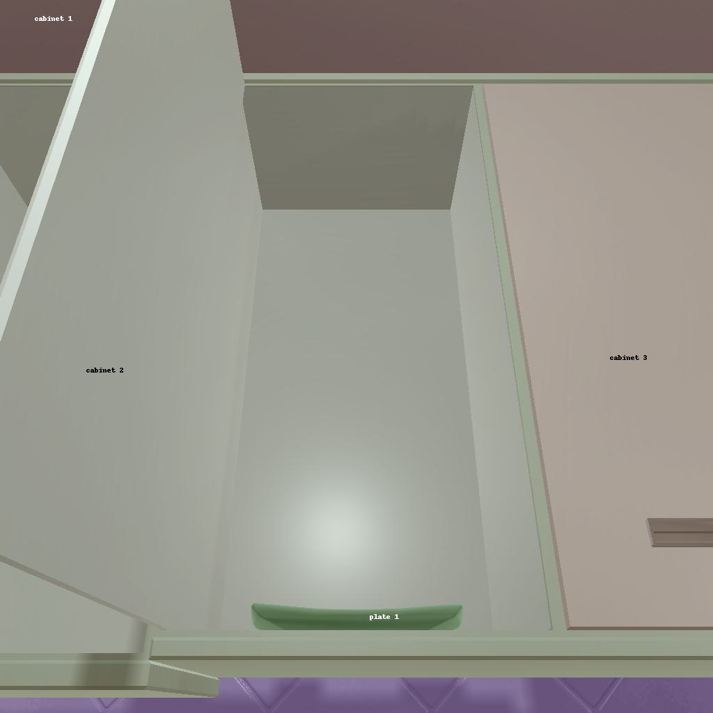

---------------------------------------------------------task: 21---------------------------------------------------------
--------------------------------------------------------------------------------------------------------------------------------------------------------------------
--------------------------------------------------------------------------------------------------------------------------------------------------------------------
Step:--------------------------------------------------------------------------13-------------------------------------------------------------------------------
----------------------------------------
VLM Prompt:
Image1:
**Instruction**
1. Analyze the provided image to identify all visible household objects, focusing on those relevant to the task description "put a hot cup in countertop."
2. Use the analysis of the image and the task hint "The agent must find an object of the desired type, pick it up, go to a microwave, heat the object with the microwave, then find the correct location to place it, and put it down there. The agent does not need to use the microwave button or open the microwave to heat the object, and the agent just needs to do action that is "heat the object with the microwave"." to answer the question: what is the most reasonable action in the choices for the task description "put a hot cup in countertop"?
4. Decide and write the answer using the template: The answer is: (i): , where i is the real number. If there is no desired object in the image, search every place based on **Initial Observation** to find the object. And if no one is exactly correct, choose a similar answer.
**Initial Observation**
You are in the middle of a room. Looking quickly around you, you can see cabinet (1-6), microwave (1), countertop (1-2), coffeemachine (1), toaster (1), sink (1), sinkbasin (1), fridge (1)
**Answer Choices**
(1): go to cabinet 3
(2): go to microwave 1
(3): go to cabinet 5
(4): go to cabinet 6
(5): go to countertop 1
(6): go to coffeemachine 1
(7): go to toaster 1
(8): go to countertop 2
(9): go to sink 1
(10): go to sinkbasin 1
(11): go to fridge 1
(12): open cabinet 2
(13): close cabinet 2
(14): take plate 1 from cabinet 2
(15): examine cabinet 2
**Answer**
Let's think step by step by following the instructions.
----------------------------------------
----------------------------------------
Original Response:
The task description is "put a hot cup in countertop." We need to find a cup, heat it in the microwave, and then place it on the countertop.
From the initial observation, we know there is a microwave (1), which will be used to heat the cup. We also know there are countertops (1-2) where the heated cup needs to be placed.
In the provided image, we can see cabinet 1, cabinet 2, and cabinet 3. Cabinet 2 is open, revealing a plate, but no cup is visible in the image.
Based on the task hint, the agent does not need to interact with the microwave other than performing the action of heating the object with it. Therefore, the first step is to find a cup.
Since no cup is visible in the image, we must search other places. The most logical places to find a cup would be in the cabinets or maybe on the countertop.
The answer is: (1): go to cabinet 3, to search for a cup since it is one of the cabinets and we have not seen inside it yet. If a cup is not found in cabinet 3, the agent should continue searching other cabinets or countertops based on the initial observation.
----------------------------------------
----------------------------------------
>>> Refine Original VLM Response and Get Pure Action: go to cabinet 3, to search for a cup since it is one of the cabinets and we have not seen inside it yet
----------------------------------------
-----------------------------------------------------------------
Running time: 8.865783452987671 seconds
Total Money: 7.495980000000005
-----------------------------------------------------------------
-----------------------------------------------------------------
Text Observation:Nothing happens.
-----------------------------------------------------------------
UNSUCCEED